Last Updated on: 5/24/2017 (Since Picovico has relaunched with exciting new features and complete design changes, the blog has been updated based on Picovico 3.0)
Celebrating birthdays are among the joys of life. And celebrating birthdays of those close to us signifies essence of bonding and relationships.

At Picovico, we understand that essence, which is why, we have a range of different video styles that can be used to create Birthday Videos. Create special Birthday Videos to delight your loved ones on their special day.
Here, we have prepared a step-by-step guide on ‘How to Make Birthday Videos with Picovico’.
Step 1: Create an account on Picovico
First things first, you need to create a Picovico account before you have access to the features offered by this web tool.
And the process is quite simple. All you need to do is add username, email, password, choose the purpose of your Picovico account and you are done. Once your account is created, you will receive a verification email.
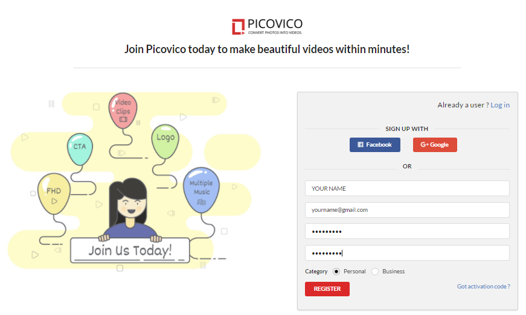
Image: Register
If you already have an account with Picovico, you can simply log in.
Step 2: Start Creating a Video
- Login to your account and you will be directed to the dashboard.
- See a button on the top right corner of the page that says ‘Create’ or simply click the ‘Create Video’ option from the menu bar. Click on it and you are through to the next step.
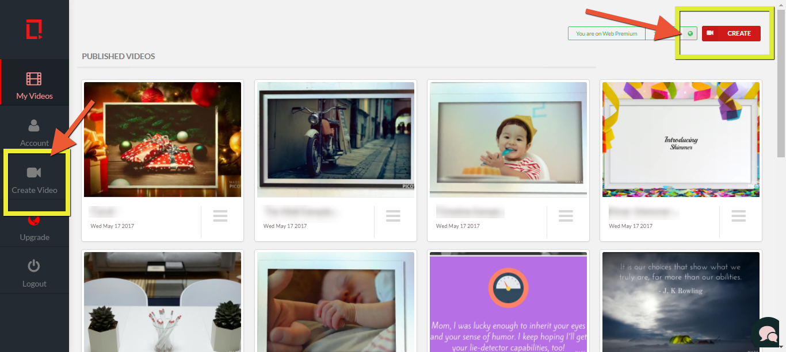
Image: Create Video Option
Step 3: Select a Style
Real deal starts now. You will now be presented with various video styles to choose from. Remember that the video style you choose now will decide the makings of your video.
Picovico offers variety of different themes. For birthdays, we have a total of 4 different styles including ‘Birthday Delight’, ‘Album’, ‘Shimmer’ and ‘Flicker’ that are featured with special birthday elements like cakes, balloons, candles, flowers, etc.
- If you are not sure which style would best fit your requirement, start with a test preview.
- When you decide to choose a particular theme, click the tick mark on the top-left corner of its thumbnail to proceed further in the video making process.
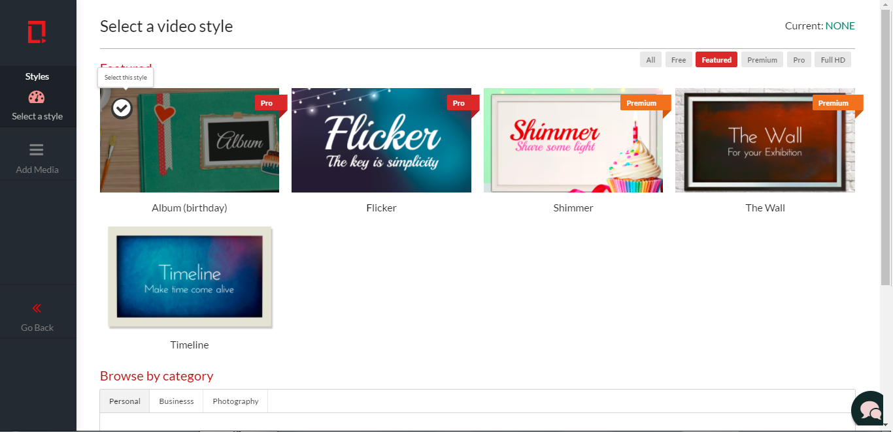
Image: Select Style
Step 4: Add Media (photos, videos, text, music)
You will be now directed to the step of adding the contents to your video.
Adding photos, video clips and text slide
There are basically 3 ways to add pictures and video clips.
- Directly upload from your device.
- From previous uploads (if any).
- From your Facebook gallery.
Click on “Add Photos & Vids” to add photos/videos or you can even click on “+” as shown in below figure to add photos/videos or text slide.
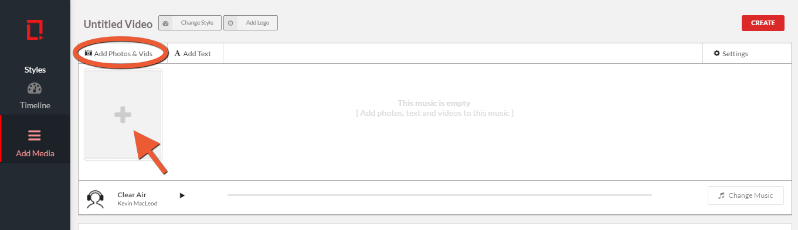
Image: Add Photos/videos or text slide
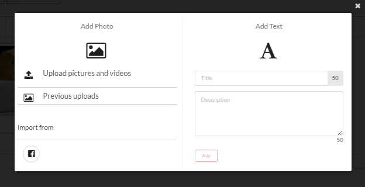
Image: Pop-up to add Photos/videos or text
Note: The video-clips feature is only available in paid plans. Upgrade your account to use this feature along with other exciting features such as: Full HD (in special themes), multiple music, logo addition, premium/pro video styles, watermark free videos and much more!
Add Caption
To add captions to uploaded photos, simply click on the ‘Add Caption’ that appears below every added slide.
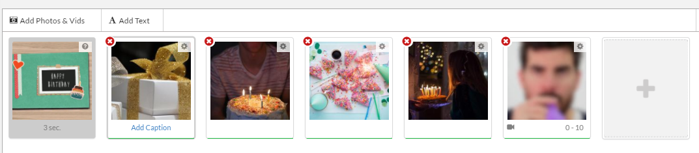
Image: Add caption option 1
Or, you can even double click the image and you’ll be directed to add caption area.
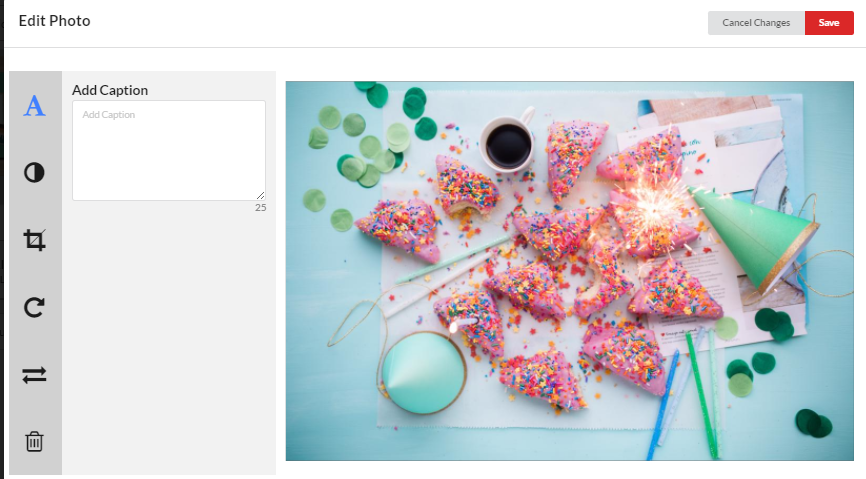
Image: Add caption option 2
Edit Image
Double clicking the image will give you an opportunity to edit it in terms of cropping, filters, rotation, axes flipping and image captions.
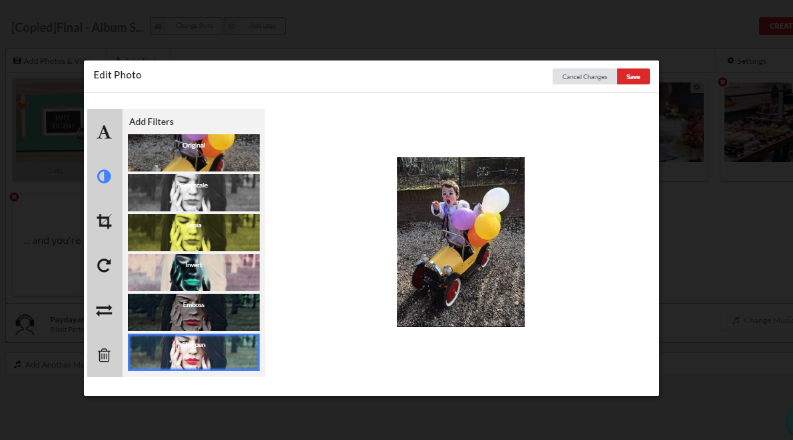
Image: Edit Image
You can also shuffle or rearrange the slides by dragging to adjust their positioning.
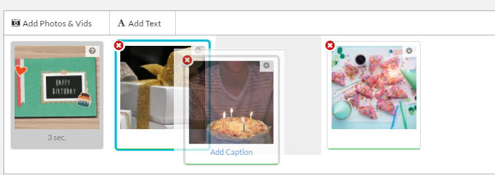
Image: Shuffle Slides
Choose Music
Once you are done with pictures and captions, you can change the audio of your video to a suitable music that you feel will best compliment your slideshow video.
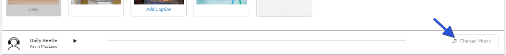
Image: Change music
You can either:
- Choose from the list of existing music files, or
- Add your own licensed piece of music.
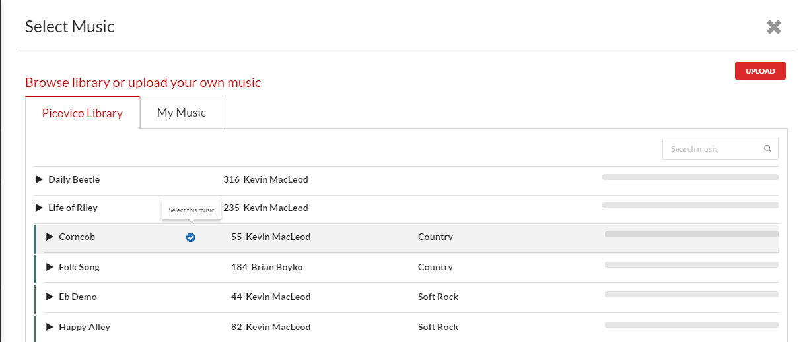
Or, if you want to add further personal touch, then just record yourself singing Happy Birthday. It will definitely make the video more personal.
You can also add a brand logo, adjust the slide’s frame time, increase the number of audio files used in the video, besides adding photos, videos, text and music in this particular step.
When you are done with adding and adjusting the contents, click on the ‘Create’ button.
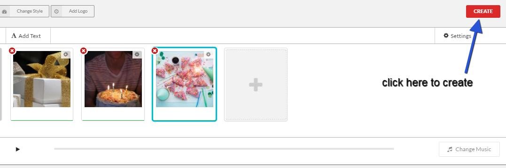
Image: Create video
Step 5: Finalize
You are almost there. Set the video quality and click on ‘Finalize’ if you are satisfied. Else, choose to ‘Keep Editing’.
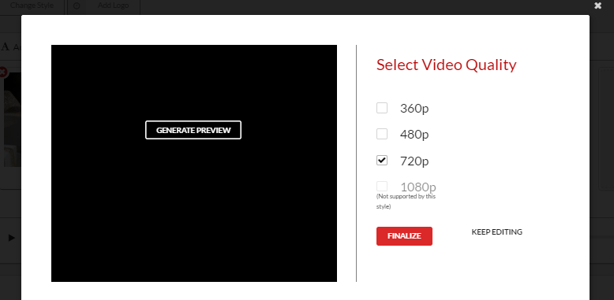
Image: Make video
Note: Free/Standard account is only capable of making videos in 360p. To create high quality videos, you must upgrade your account.
Step 6: Produce
The video will be started to create now. In this page, you will see a progress bar and some video information that you can update. You can name the video, add descriptions, adjust its privacy and save the information.
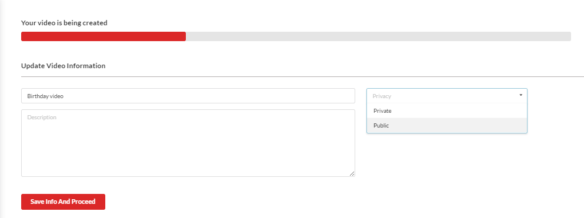
If you do not make any changes in this page, the video will be named as ‘Untitled Video’ and the privacy will be set as ‘Private’ in default .
However, these attributes can be changed anytime through the video settings option in the media player page.
The full length green signal on the progress bar indicates the completion of video making process and can be viewed by clicking on the ‘Click to play’ link.
Enjoy your video and share it among your social circles.
Here’s a sample video created using Birthday Album theme.
Create your own birthday video